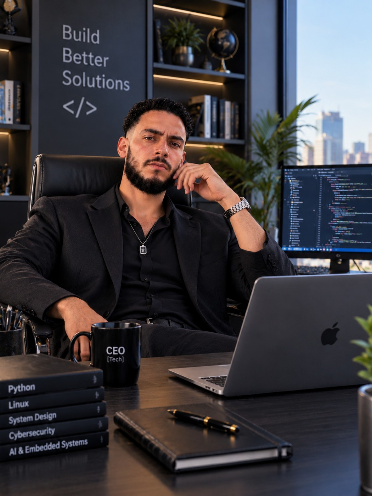

01 /
Développement
Web
Conception et mise en ligne de sites vitrines modernes, responsive et pensés pour une navigation intuitive.
HTMLCSSGitHub PagesWeb Design
BONJOUR, JE SUIS
Technicien polyvalent × Créateur digital
À la croisée de la technologie, du design et de la création audiovisuelle. Je transforme les idées en expériences digitales claires, efficaces et mémorables.

« La créativité prend toute sa valeur lorsqu'elle rencontre la technique. »
Je suis Achref Baklouti, professionnel polyvalent basé à Sousse, avec une expérience en industrie, logistique, contrôle qualité et relation client. Je poursuis actuellement une formation BTP en informatique industrielle.
En parallèle, je développe mes compétences en création de sites web, design graphique avec Canva et montage vidéo avec Filmora et CapCut. Mon objectif : contribuer à des projets ambitieux et apporter des solutions concrètes aux entreprises.
Consulter mon CV complet ↗Des compétences complémentaires au service de vos projets.
Conception et mise en ligne de sites vitrines modernes, responsive et pensés pour une navigation intuitive.
Création de visuels publicitaires, contenus pour réseaux sociaux, identités visuelles, flyers et présentations.
Montage narratif, transitions, titrage, synchronisation audio, correction colorimétrique et contenus courts.
Contrôle qualité, logistique, maintenance smartphone, informatique industrielle et apprentissage des technologies émergentes.
Découvrez mon projet web publié et les espaces dédiés à mes créations graphiques et vidéos.
Présentation des services automobiles, des tarifs et d'un parcours de réservation, avec publication sur GitHub Pages.
Un espace prêt à accueillir mes visuels publicitaires, affiches, publications et identités visuelles.
Un espace prêt à accueillir mes Reels, vidéos promotionnelles et projets de montage.
Formation technique en cours, complétée par un apprentissage continu du web, de l'électronique et des outils numériques.
Préparation des commandes, scanning, traçabilité, conformité et organisation des opérations.
Organisation du dépôt, suivi des marchandises, communication client et gestion des priorités dans un contexte international.
Tests et conformité des faisceaux automobiles, détection des anomalies et approvisionnement des lignes.
Suivi d'atelier et contrôle de finition, communication client, marketing digital et maintenance de smartphones depuis 2020.
Vous recherchez un profil polyvalent pour un poste, une collaboration ou un projet digital ? Je serais ravi d'échanger avec vous.